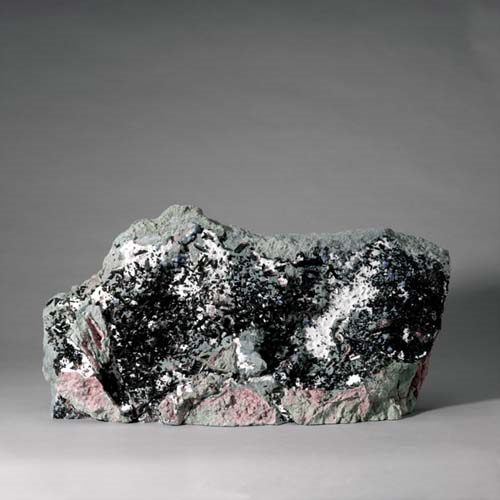

Benitoite - BaTiSi3O9
Cyclosilicates


Habit: Sapphire blue, white to colorless or pink; commonly bicolor. Flat prismatic crystals, tabular, triangular or hexagonal in outline. Vitreous luster; transparent to translucent. White streak.
Environment: Occurs in compact granular natrolite veins cutting glaucophane schist interlayered with serpentine.
Etymology: From the type locality, San Benito County, California.